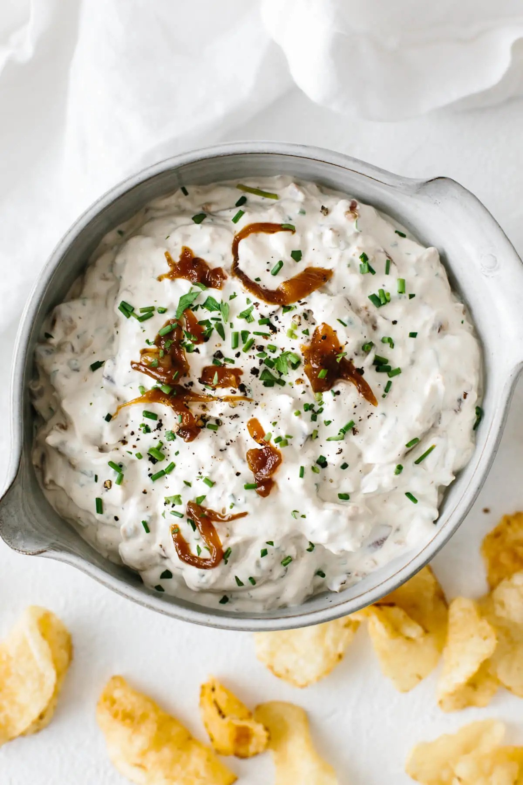

French Onion Dip Recipe

The Only French Onion Recipe You Will Ever Need!
This French onion dip is rich and full of flavour and enhances the taste of your favourite foods.
It can be accompanied with chips, used as a sandwich spread instead of mayo and be the ultimate dip for pizza.
Ingredients
- 1 c. sour cream
- 1 large onion
- 1 tablespoon of butter
- 1 pinch garlic powder
- 1/4 tsp. kosher salt
- 1 tbsp. finely chopped fresh green onion
Steps
- Put the butter into the pan and let it melt.
- Cut the onion and saute it in the butter until caramelized.
- Then let it cool down for 20 minutes.
- Place your sour cream in a small bowl. Add the caramelized onion, garlic powder, salt, and green onion. Mix together very well until completely uniform. Taste with a spoon and adjust seasonings if necessary.